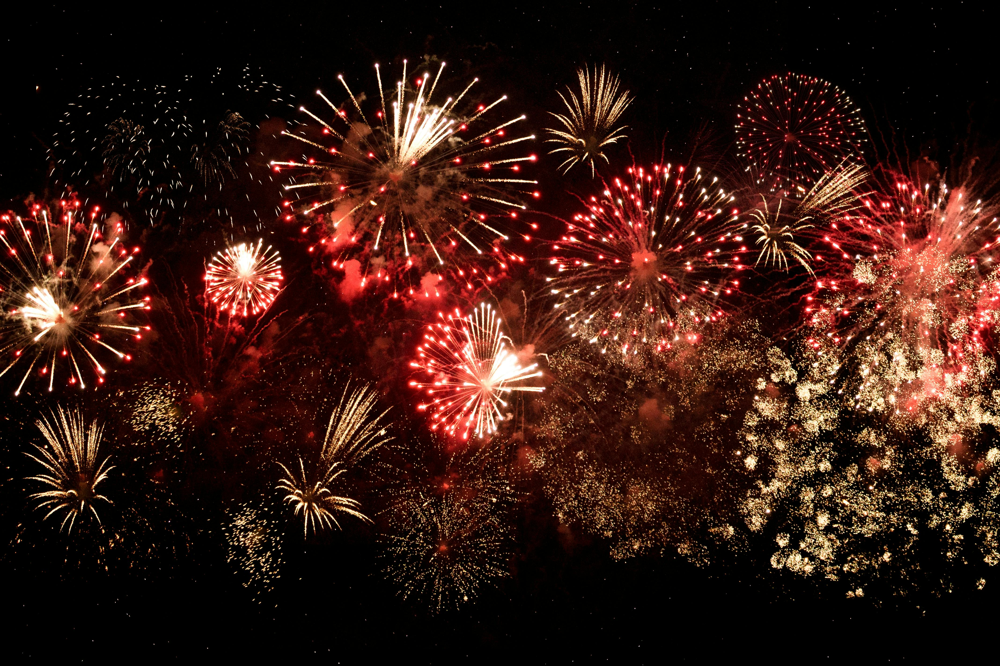

Nothing in Rexburg?
Events
Beehive Credit Union Picnic
If you're looking for a fun, family-friendly event in Rexburg, Idaho, you won't want to miss the Beehive Federal Credit Union's Annual Summer Picnic. Held at the picturesque Porter Park, this picnic is a lively celebration that brings the community together for an afternoon of entertainment, delicious food, and engaging activities. Taking place on June 23 from 4 PM to 7 PM, the picnic offers a variety of entertainment options that cater to all ages. You can enjoy live cowboy singing from The Teton Riders and entertaining poetry from Andy Nelson, creating a festive western atmosphere. Dress up in your best cowboy gear for a chance to win awards for the best cowboy hat, belt buckle, bolo tie, and boots. The event features a wide array of activities, including a waterslide, carousel, bounce houses, human foosball, face painting, a fish pond, and a climbing wall. For just $5, you can get a wristband that grants access to all these games and activities (free for children under 2). Plus, don't miss the chance to try the mechanical bull ride, which adds to the cowboy-themed fun. In terms of food, Beehive members can enjoy a free meal that includes hot dogs, chips, salad, lemonade, and an ice cream bar. Non-members can also join in for $8. Additionally, you can purchase cotton candy and shaved ice for just $1 each. One of the best parts of this event is that all proceeds go to Primary Children's Hospital, making it a fun day out for a great cause.
Whoopee Days Rodeo

If you're looking for an exciting event, the Whoopee Days Rodeo at the Madison County Fairgrounds is a must-visit! Held from June 27th to 29th, 2024, the rodeo offers a thrilling experience with gates opening at 5:00 PM. Each night has a unique theme: Family Night on Thursday with affordable ticket bundles, Cancer Awareness Night on Friday featuring a raffle, and Patriotic Day on Saturday capped off with a spectacular fireworks show. Mutton Bustin' for kids adds extra fun, and the energetic atmosphere promises a memorable time for all. For more details, visit the Whoopee Days Rodeo page.
4th of July
If you're looking for a fun-filled way to celebrate Independence Day, Rexburg has an exciting lineup for you! The Fourth of July festivities kick off with a lively parade through downtown, showcasing local bands, floats, and performers. The celebration continues at Porter Park with games, food vendors, and live music, creating a vibrant and community-focused atmosphere. The highlight of the evening is the spectacular fireworks show that lights up the sky, providing a perfect end to a day full of patriotic fun. Don’t miss out on this all-day event that brings the community together in celebration! For more details, visit the Fourth of July Page.